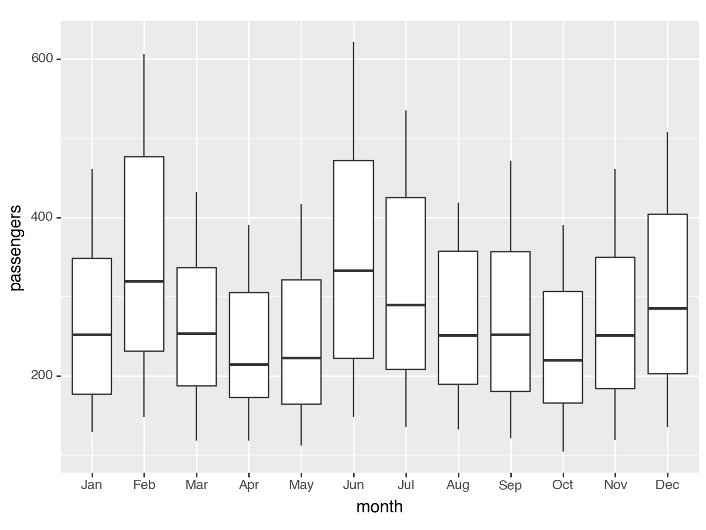

import pandas as pd
import numpy as np
from plotnine import (
ggplot,
aes,
geom_boxplot,
geom_jitter,
scale_x_discrete,
coord_flip
)A box and whiskers plot
In [1]:
A box and whiskers plot
The boxplot compactly displays the distribution of a continuous variable.
Read more: + wikipedia + ggplot2 docs
In [2]:
flights = pd.read_csv('data/flights.csv')
flights.head()| year | month | passengers | |
|---|---|---|---|
| 0 | 1949 | January | 112 |
| 1 | 1949 | February | 118 |
| 2 | 1949 | March | 132 |
| 3 | 1949 | April | 129 |
| 4 | 1949 | May | 121 |
Basic boxplot
In [3]:
months = [month[:3] for month in flights.month[:12]]
print(months)['Jan', 'Feb', 'Mar', 'Apr', 'May', 'Jun', 'Jul', 'Aug', 'Sep', 'Oct', 'Nov', 'Dec']In [4]:
(
ggplot(flights)
+ geom_boxplot(aes(x='factor(month)', y='passengers'))
+ scale_x_discrete(labels=months, name='month') # change ticks labels on OX
)
Horizontal boxplot
In [5]:
(
ggplot(flights)
+ geom_boxplot(aes(x='factor(month)', y='passengers'))
+ coord_flip()
+ scale_x_discrete(
labels=months[::-1],
limits=flights.month[11::-1],
name='month',
)
)
Boxplot with jittered points:
In [6]:
(
ggplot(flights, aes(x='factor(month)', y='passengers'))
+ geom_boxplot()
+ geom_jitter()
+ scale_x_discrete(labels=months, name='month') # change ticks labels on OX
)